刚体
参数
本插件使用 Blender 内置的 刚体系统（Rigid Body System） 进行物理模拟，因此所有参数的行为与 Blender 原生刚体的设置完全一致。
如果你已经熟悉这些参数，可以跳过本节。
否则，下面的内容将对几个关键参数进行简要说明，并结合实际使用经验提供一些调整建议。
质量（Mass）
Mass（质量） 参数定义了物体的惯性，即物体对加速度变化的抵抗程度。
加速度响应：在施加相同力的情况下，质量越大的物体加速越慢。
碰撞行为：质量较大的物体会更容易推动质量较小的物体，而自身受到的影响较小（动量守恒）。
重力影响：质量不会改变自由落体速度（重力加速度恒定），但会影响碰撞时产生的冲击力。
转动惯量：质量较大的物体通常具有更大的惯性张量，因此更难被旋转。
小技巧
默认值 1.0 可以视为一个基准值，你可以以此为参考，根据需要对其他物体进行相对调整。
摩擦力（Friction）
Friction（摩擦力） 控制刚体在另一个表面上滑动时产生的阻力大小。
数值越高，阻力越大，物体会更快停止。
数值越低，表面越光滑，物体更容易滑动。
Blender 使用内置的 Bullet 物理引擎（Bullet Physics Engine） 来模拟刚体动力学。两个物体之间的综合摩擦力由 Bullet 使用如下公式计算：
在实际计算中，如果其中一个物体的摩擦值非常低，最终得到的综合摩擦力也会较低。只有当两个物体都具有较高摩擦值时，接触时才会产生明显的阻力。
小技巧
0.0：类似冰面，几乎无限滑动。0.2：较滑的地面，缓慢停止。0.5：典型的木材或桌面摩擦。0.8：类似橡胶，物体几乎立即停止。>1.0：极高摩擦，物体几乎不会移动，除非受到较大的推动。
弹性（Bounce）
Bounce（弹性） 用于定义碰撞时能量保留的比例，也称为 恢复系数（Coefficient of Restitution, e）。该参数只影响碰撞法线方向的速度，不影响沿表面方向的运动。
小技巧
0.0：完全非弹性碰撞 —— 物体会粘在表面上（类似黏土）。1.0：完全弹性碰撞 —— 物体会以相同速度反弹（理想情况）。0.0 ~ 1.0：部分弹性碰撞，会损失一部分能量。
线性阻尼（Linear Damping）
Linear Damping（线性阻尼） 用于模拟阻力（例如空气阻力）。当没有外力作用时，它会逐渐降低物体的线性速度。
小技巧
0.0：没有阻尼 —— 物体会像在冰面上一样持续滑动。0.04（默认）：轻微阻力，物体会逐渐停止。0.3：明显阻力，物体会在几秒内停止。1.0：几乎立即停止。
角阻尼（Angular Damping）
Angular Damping（角阻尼） 控制物体旋转速度衰减的速度。它的作用方式与 线性阻尼（Linear Damping） 相同，但影响的是角速度，而不是线速度。
小技巧
0.0：像陀螺一样持续旋转，不会减速。0.1（默认）：轻微旋转阻力，旋转会逐渐减弱。0.3：较强阻力，旋转会在几秒内停止。1.0：几乎立即停止旋转。
添加刚体
快速添加
选择 骨架，并切换到 姿态模式。
选择需要添加刚体的骨骼。
点击 按钮。
设置相关属性后，点击 确认。
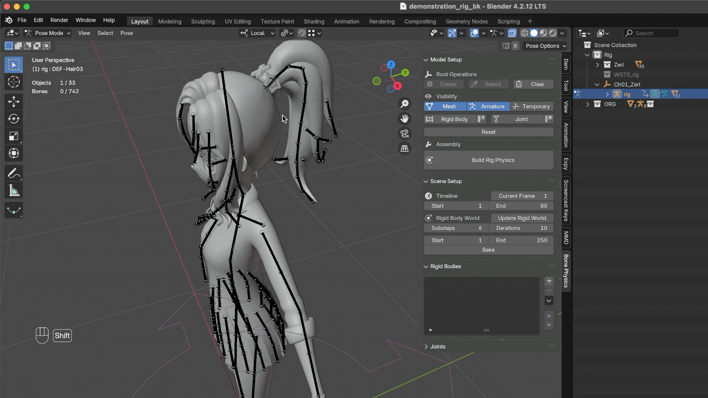
备注
所有刚体参数的详细说明可以在 刚体属性 部分查看。
$name是一个占位符，会自动使用目标骨骼的名称作为刚体名称。如果在 姿态模式 中没有选中任何骨骼，插件会为模型创建一个 辅助刚体。
- 对于 Rigify 骨架，建议采用以下方式：
将
Bone类型的刚体（即完全由骨骼驱动的刚体）绑定到DEF-骨骼。你可以在 3D视图 中自由移动和旋转刚体，并在 刚体属性面板 中调整尺寸，使其尽可能贴合模型的网格轮廓，从而获得更准确的物理模拟效果。
一个骨骼可以驱动多个此类型的刚体，这些刚体都会跟随同一个骨骼的变换。
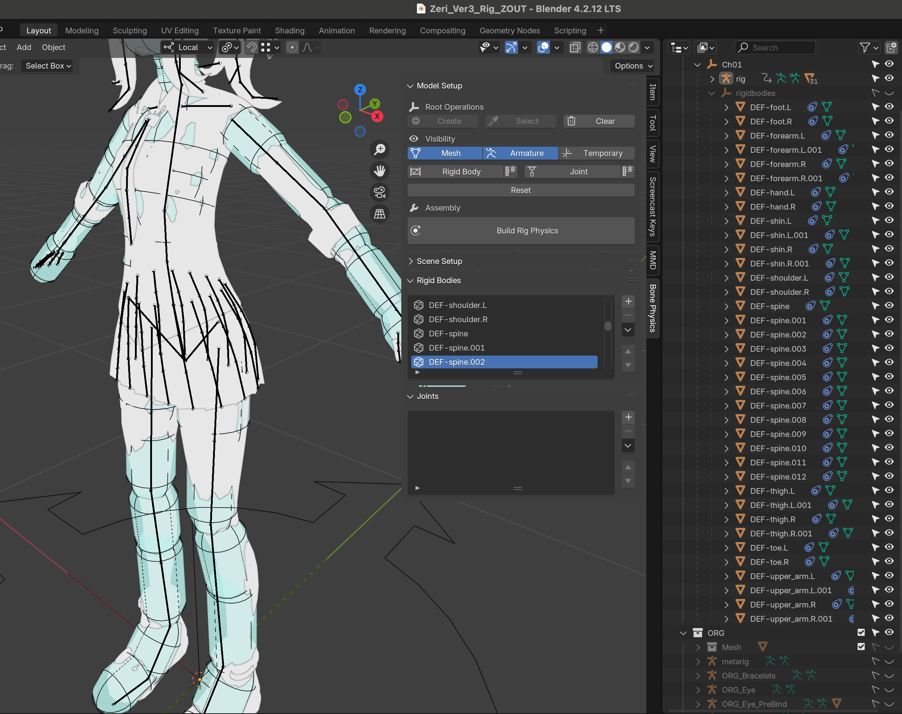
将
Physics或Physics + Bone类型的刚体（即由物理系统驱动的刚体）绑定到CTRL-骨骼。为了允许在物理模拟后进行手动修正，需要创建两个骨骼集合（Bone Collections）：
其中一个命名为
xxx_Physics，用于存放直接由物理系统驱动的骨骼；另一个集合通过Copy Rotation约束复制其旋转，并使用Mix Before Original模式，从而允许在其基础上进行手动调整，修正一些轻微的穿插或不理想的运动。这种模块化结构有助于快速定位和调试问题。关于如何创建这些骨骼集合以及在 Rigify 骨架中添加自定义集合的详细方法：
可以参考 Youtube 或 Bilibili 中的教程，或者查看示例文件中的设置。（注意：只需关注视频中如何添加 Bone Collection 的部分，布料模拟部分可以忽略）
对于
Physics或Physics + Bone类型的刚体，一个骨骼同样可以绑定多个刚体。在模拟过程中，骨骼会由 质量最大的刚体 驱动，其余刚体则作为辅助刚体参与计算。
对于其他绑定系统或自定义骨架，请确保所有参与物理模拟的骨骼都具有对应的 控制骨骼。这样在必要时你可以手动覆盖物理模拟结果，从而避免网格发生相交或穿插。
保存预设
你可以保存参数预设以便重复使用。在实际工作中，这种方式可以显著节省时间。
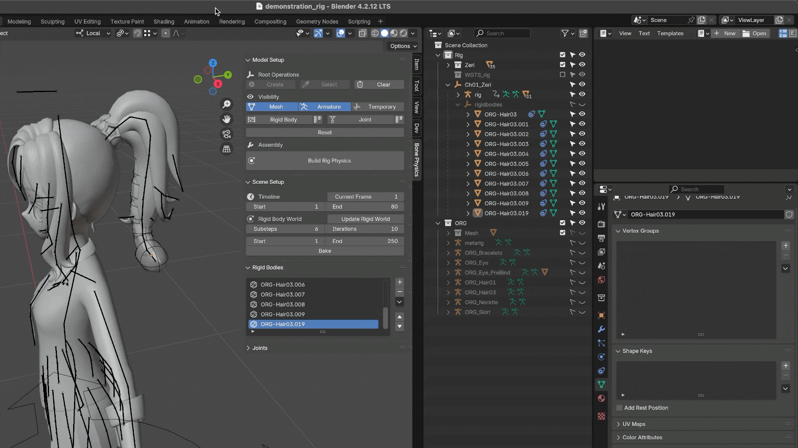
刚体属性
Name：刚体名称。
Collision Group：该刚体所属的碰撞组。
Collision Group Mask：不会 与该刚体发生碰撞的组。
Rigid Type（刚体类型）：
Bone：刚体跟随绑定骨骼的变换。Physics：骨骼的变换完全由刚体驱动。Physics + Bone：骨骼位置仍然跟随父骨骼，但旋转来自刚体。
Shape：碰撞体形状。
Outward Axis：骨骼局部坐标中指向“外侧”的轴。
Size：碰撞体尺寸，相对于目标骨骼的长度进行缩放。
Mass：质量（Mass）。
Friction：摩擦力（Friction）。
Bounce：弹性（Bounce）。
Linear Damping：线性阻尼（Linear Damping）。
Angular Damping：角阻尼（Angular Damping）.
警告
修改刚体属性时，请始终使用本插件提供的 刚体属性面板，不要通过 Blender 内置界面直接编辑。
备注
Physics与Physics + BonePhysics：骨骼的位置和旋转完全由刚体控制。刚体可能会使骨骼偏离骨架。Physics + Bone：骨骼的位置仍由父骨驱动，但旋转从刚体复制。这样可以在保持物理模拟结果的同时，防止骨骼脱离父骨。
Outward Axis在使用 盒状 刚体（球形 或 胶囊形 刚体可忽略此设置）模拟裙子物理时，请确保目标骨骼已经具有正确的局部方向——即 Z轴向外 或 X轴向外。
然后，在添加刚体时，将
Outward Axis设置为相应的Z或X。这样可以确保新添加的刚体继承正确的初始旋转：
Z 轴 与骨骼方向对齐；
Y 轴 沿裙子法线指向外侧；
X 轴 沿裙子表面切向延伸。
对比：正确设置与错误设置
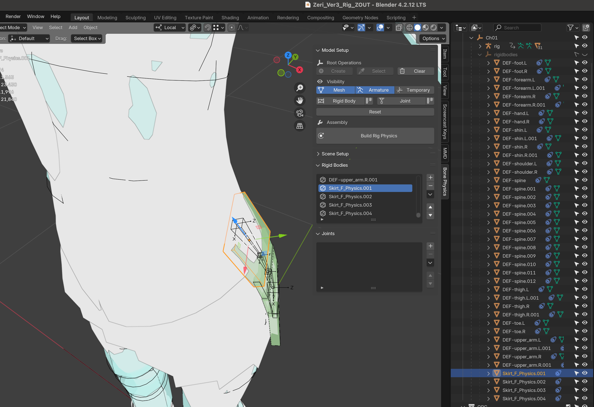
正确设置 — 刚体与网格完美对齐。
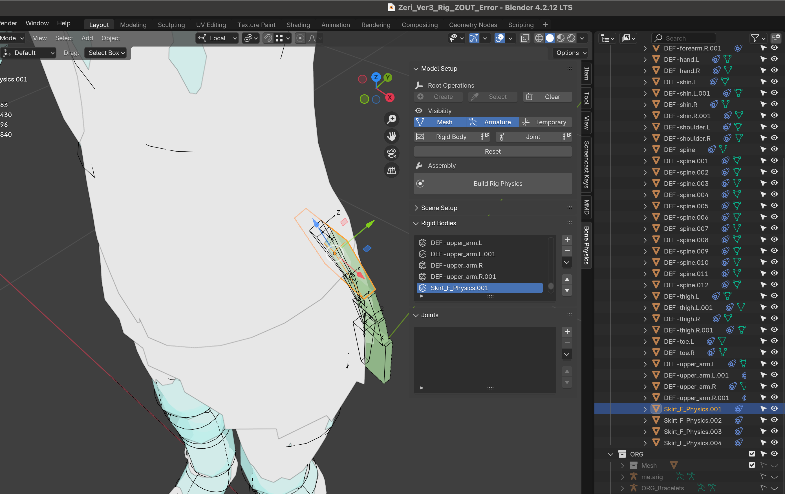
错误设置 — 刚体出现扭曲或偏移。
{kind=link}
{kind=link}
- Size
在预设面板中，所有形状都有三个分量（
x, y, z）。但是，不同形状需要的分量数量不同：
球体：仅半径（使用
x）。盒体：长、宽、高（使用
x, y, z）。胶囊体：半径（半球）和高度（使用
x, y）。建议保持预设面板中的默认值，并在 刚体属性面板 中进行必要的微调。
刚体属性面板
刚体属性面板 用于查看和编辑刚体属性。该面板位于 Blender 的 Physics 选项卡中。
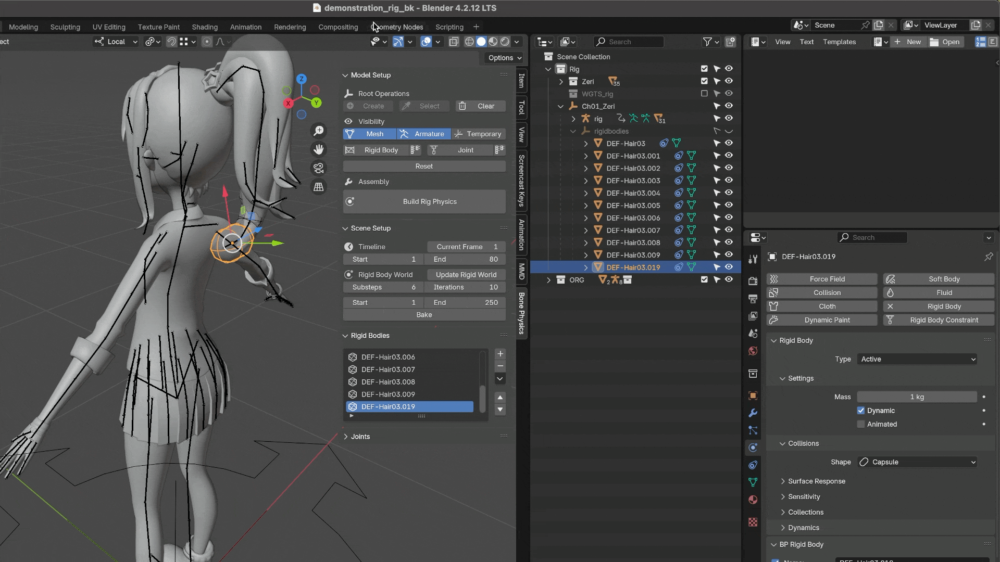
警告
为了保持一致性并避免意外错误，所有刚体属性 必须 通过插件提供的 刚体属性面板 进行修改。
刚体列表
刚体列表 显示当前场景中的所有刚体。
默认情况下会按照 进行筛选，只显示当前选中模型的刚体。如果需要查看所有模型的刚体，可以将筛选切换为 。
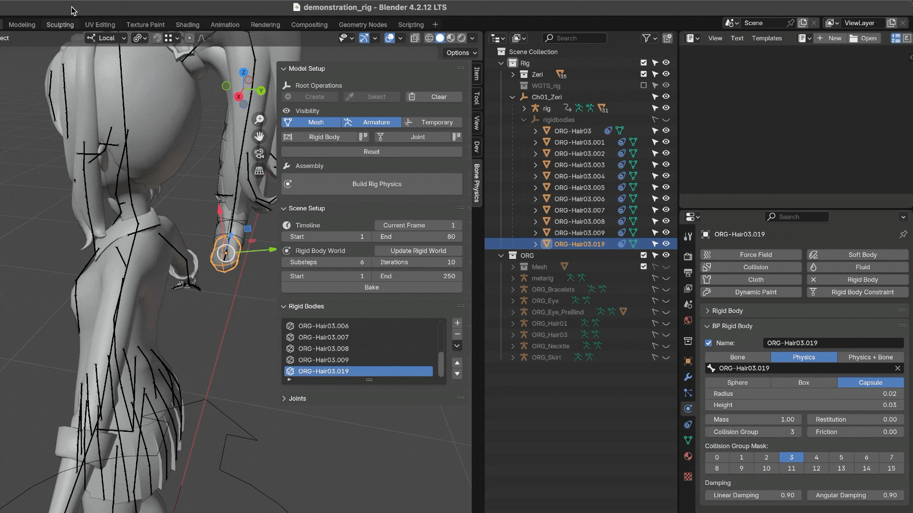
重新排序列表项
你可以使用 和 按钮重新排列列表项，也可以通过右侧下拉菜单中的 和 选项进行排序。
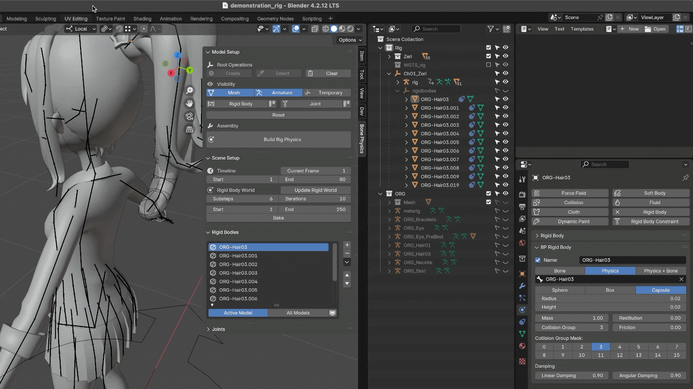
错误提示
缺少 Physics 组件
当刚体对象缺少 Rigid Body Settings 组件时，对应的列表项会显示 "缺少物理组件" 图标。要修复此问题，可以在 刚体属性面板 中点击 按钮以恢复该设置。
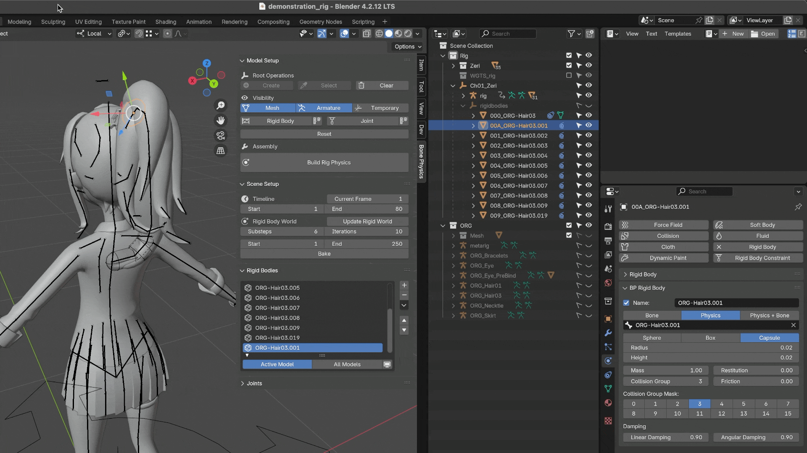
缺少骨骼
当刚体没有绑定骨骼时，对应的列表项会显示 "缺少骨骼" 图标。你可以在 刚体属性面板 中重新分配骨骼。
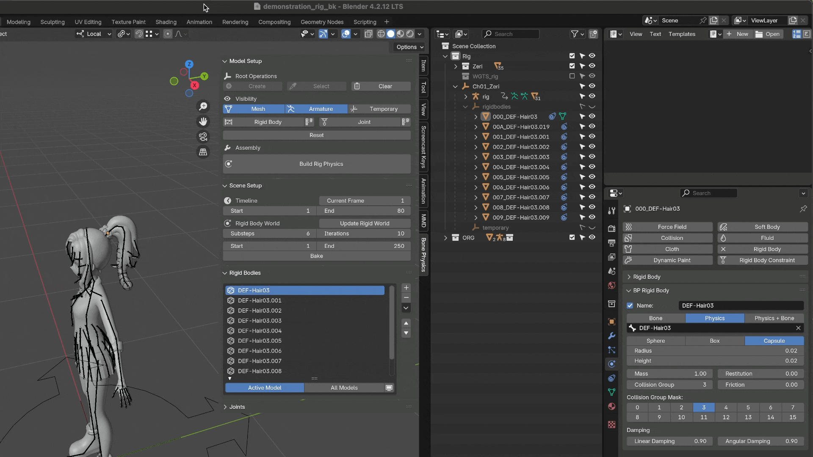
选择刚体
你可以通过右侧菜单中的 快速批量选择刚体。该工具会比较当前激活刚体的属性，并选择所有具有相同属性值的其他刚体。
匹配属性
点击 后，会弹出一个对话框，允许你选择用于匹配的属性：
：选择具有相同碰撞组编号的刚体。
：选择具有相同碰撞掩码配置的刚体。
：选择具有相同刚体类型的刚体（例如
Bone、Physics、Physics + Bone）。：选择使用相同碰撞体形状的刚体。
：选择绑定到同一目标骨骼的刚体。
这些属性可以单独选择，也可以任意组合使用。
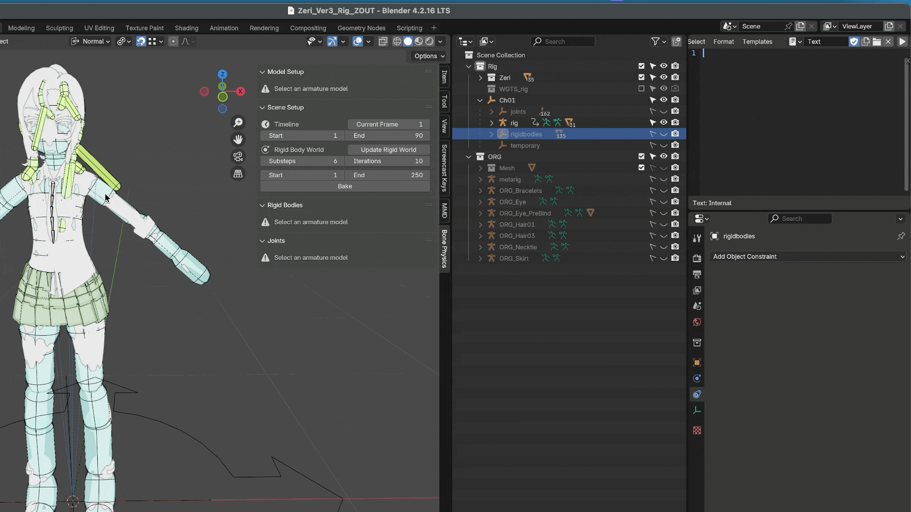
隐藏其他对象
该对话框还包含一个 Hide Others 选项：
启用后，所有不符合所选属性条件的刚体都会被隐藏。
关闭后，不符合条件的对象仍然保持可见，但不会被选中。
删除刚体
在 3D视图、刚体列表 或 大纲视图 中选择刚体，然后点击 按钮即可删除。
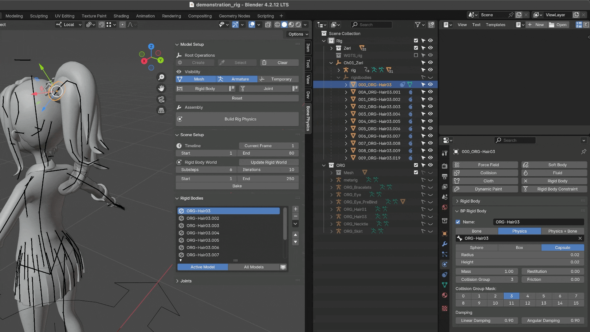
示例：辅助刚体
在为风格化角色的头发添加刚体时（特别是弯曲的刘海或侧发），如果每个骨骼只使用一个刚体，往往会产生不理想的效果：
在模拟过程中，头发会在重力作用下垂直下垂。
但对于非写实的风格化头发，即使在 Idle 状态下，也应该保持设计时的形状和弹性。为了重现这种弹性效果，并在模拟过程中保持平滑自然的运动，我们引入 辅助刚体 来影响目标刚体，使其能够维持建模时的姿态，而不是在重力作用下直接下垂。
辅助刚体 通常与其目标刚体具有相同的质量。通过调整它们之间的 角度，或 辅助刚体 的 长度，你可以控制其对目标刚体施加的扭矩，从而在模拟中达到期望的平衡效果。
对比：使用辅助刚体 与 不使用辅助刚体
{kind=link}
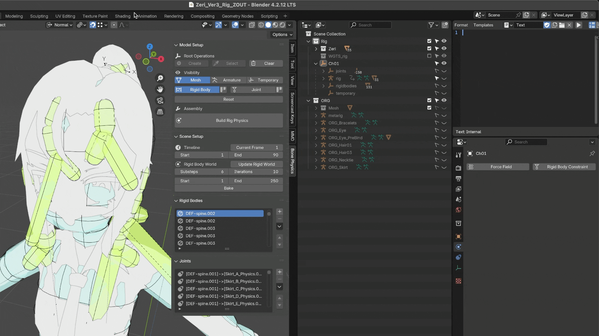
使用辅助刚体 — 目标刚体由一个带角度的辅助刚体提供支撑，从而保持风格化的形状，防止其在重力作用下下垂。
{kind=link}
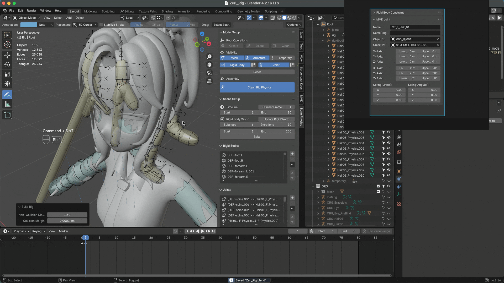
未使用辅助刚体 — 目标刚体仅受到重力约束，导致头发在模拟中直接下垂，并失去原本设计的弯曲形状。

MMD 模型示例 — “妮可”模型在头发上使用了大量辅助刚体，使头发即使在 Idle 姿态下也能保持弹性和上扬的形状。